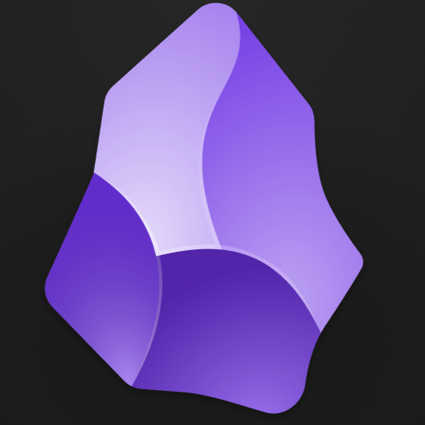
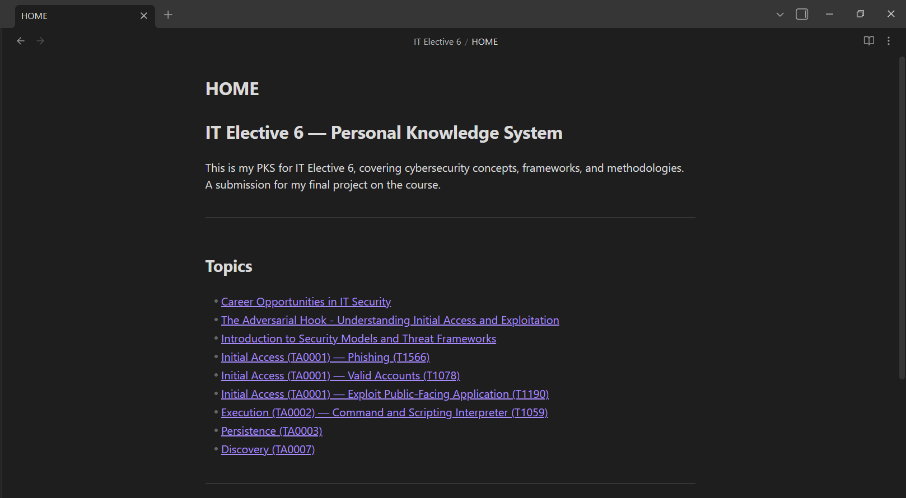
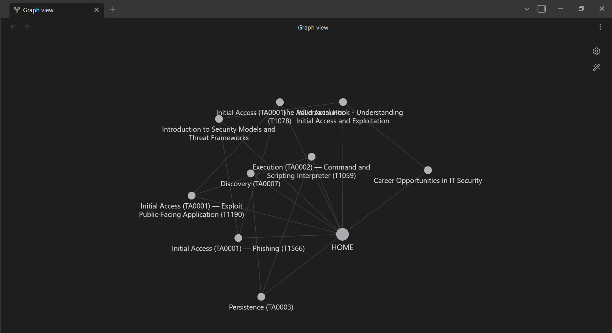

IT Elective 6 · 2026
Personal Knowledge System
A structured cybersecurity knowledge base built in Obsidian
// screenshots


About
A comprehensive personal knowledge system built as part of IT Elective 6 course, documenting core cybersecurity lessons in a structured, interlinked format using Obsidian. Designed to function as an organized reference, not just notes, but a connected map of how attack techniques relate to each other.
Coverage spans the full threat lifecycle: from initial access vectors and persistence mechanisms, through real-world attack case studies, all mapped against the MITRE ATT&CK framework.
What's Covered
-
MITRE ATT&CK Framework
Tactics, techniques, and procedures mapped using the industry-standard threat framework.
-
Initial Access Techniques
How attackers gain a foothold — phishing, exploitation, supply chain attacks, and more.
-
Persistence Mechanisms
Methods used to maintain access across reboots and detection attempts.
-
Real-World Attack Case Studies
Analysis of notable breaches and incidents, connected back to the techniques documented.
Files
Open in Obsidian for the full graph view and internal links.